速览
虽然不容易听到，但《大乱斗》也有环境音。把音量调大听几个看看：是不是觉得意外地在响着各种声音？在以前讲过的重要度、优先度中，环境音是最低的，所以太响让关键的效果音难以听到就麻烦了。但并不是完全听不到。首先，环境不同，声音的回响不同：被好音箱包围时，有扎实的环境音非常重要。而且突然停手时，如果是一片死寂，就没有氛围。游戏也需要让人感到仿佛进入了那个世界；尤其主观视角、第三人称视角等，让人觉得身在那里很重要。声音的性质与被要求夸张的其他效果音不同，相当写实的声音也行得通：例如即使是喜剧风笔触的游戏，叠上写实的声音意外地也没问题。这不代表简单，但影像作品等的经验也容易通用。环境音也要毫不松懈地设置，增加沉浸感。
1. 《大乱斗》的环境音 0:04
虽然不容易听到，但《大乱斗》也有环境音。把音量调大听几个看看：
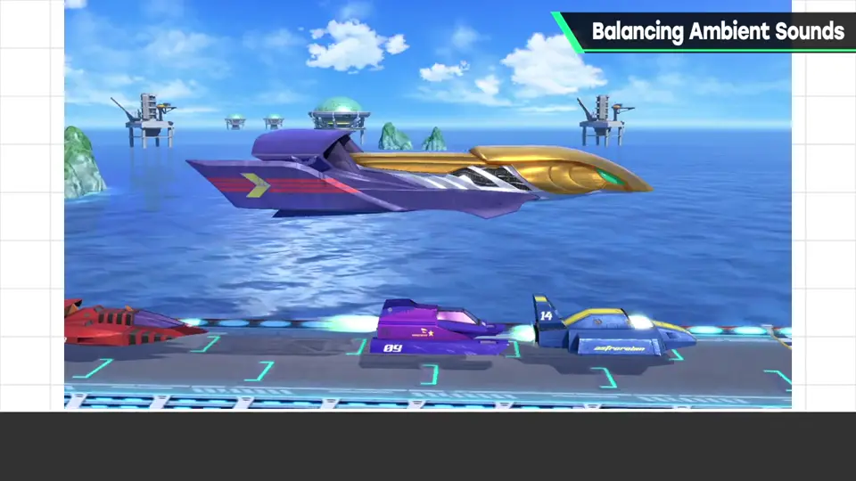
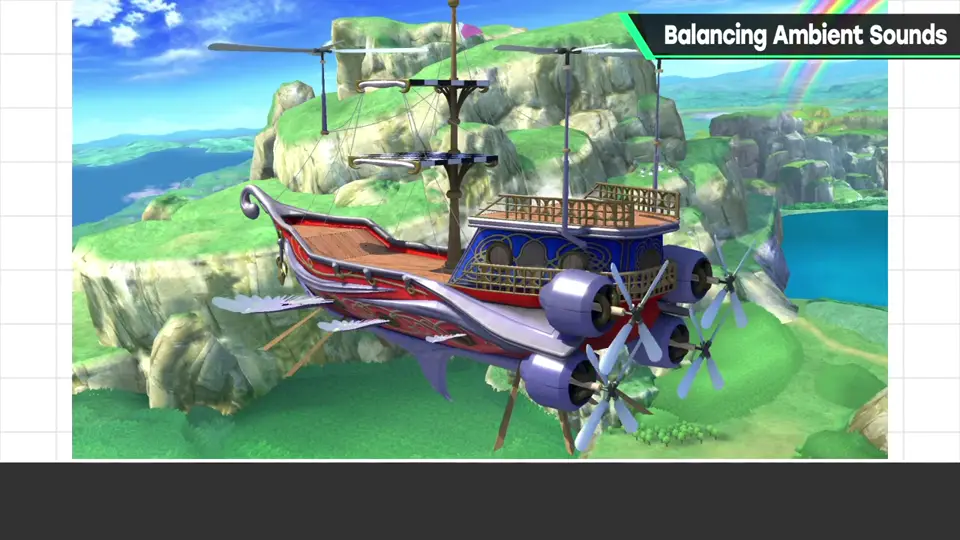
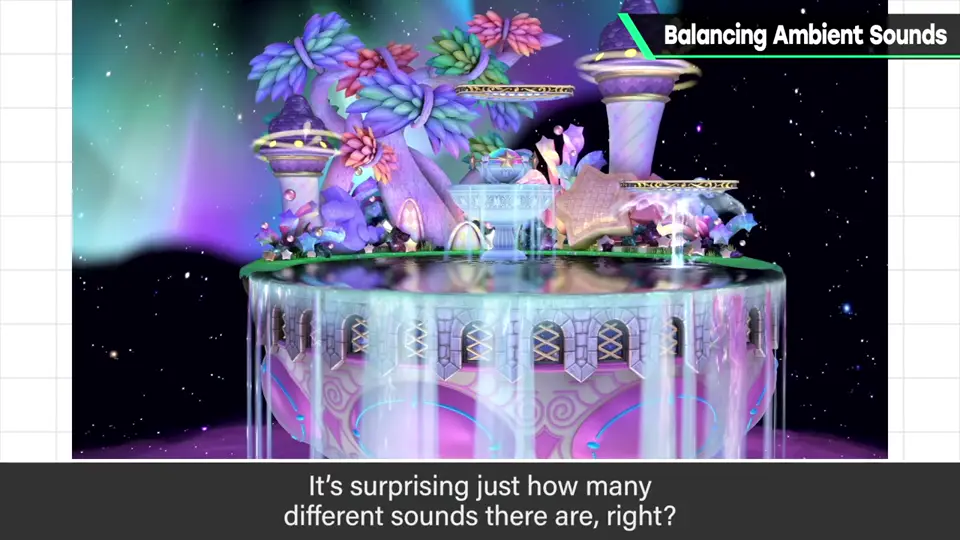
是不是觉得意外地在响着各种声音？
2. 优先度最低 0:33
在以前讲过的重要度、优先度中，环境音是最低的。
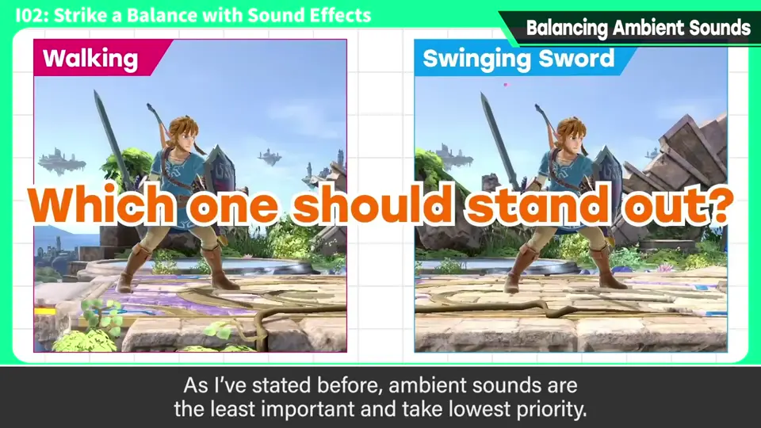
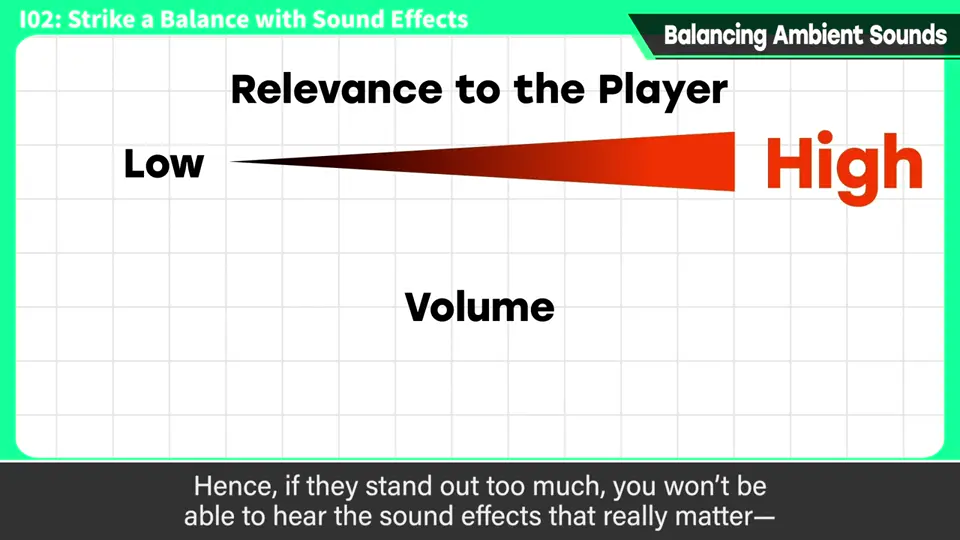
3. 为什么不能没有 0:50
首先，环境不同，声音的回响不同：被好音箱包围时，有扎实的环境音非常重要。
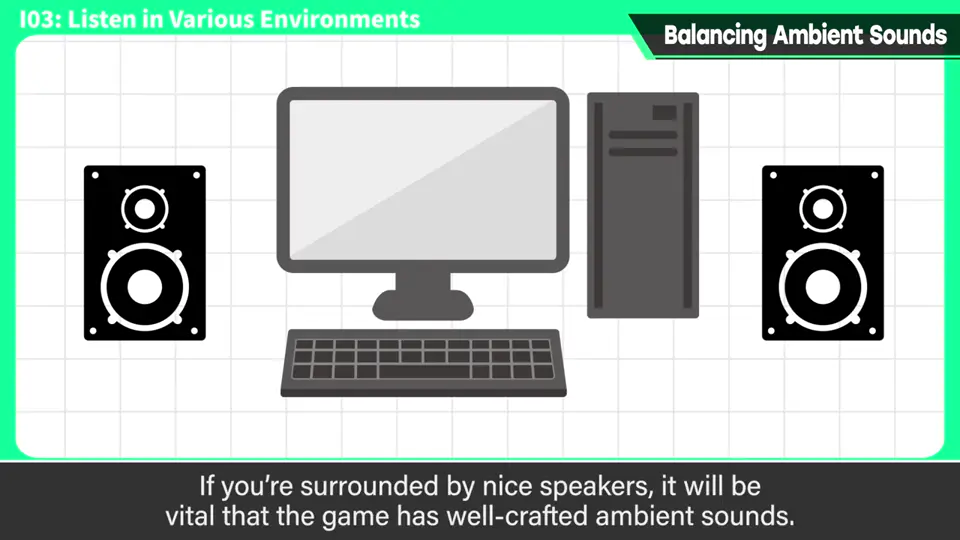
而且突然停手时，如果是一片死寂，就没有氛围。
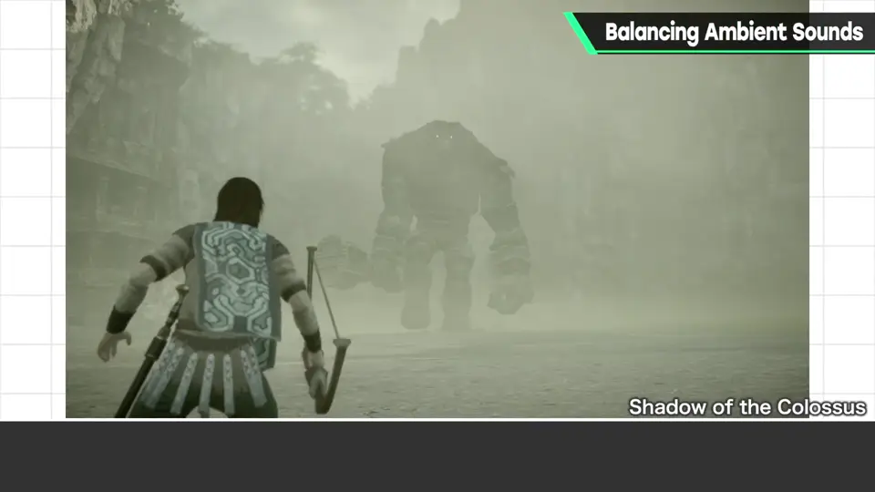
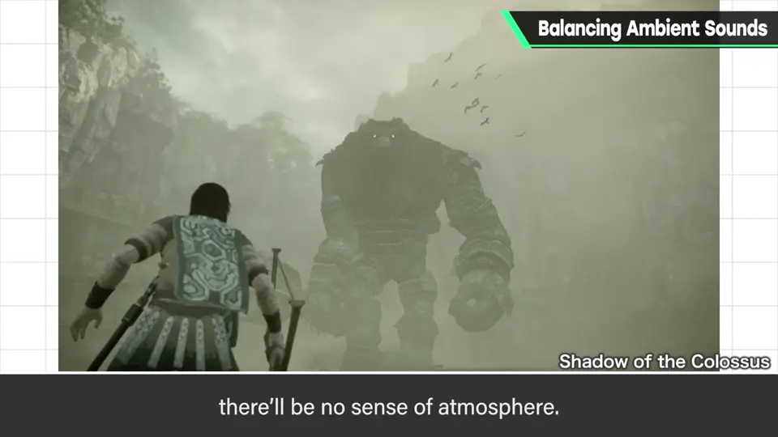
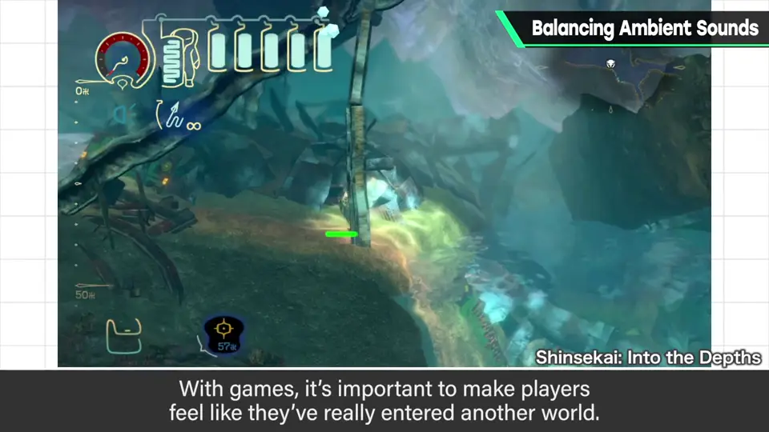
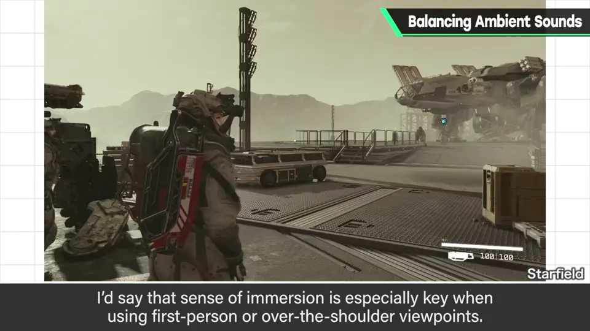
4. 写实的声音行得通 1:16
与被要求夸张的其他效果音不同，相当写实的声音也行得通。
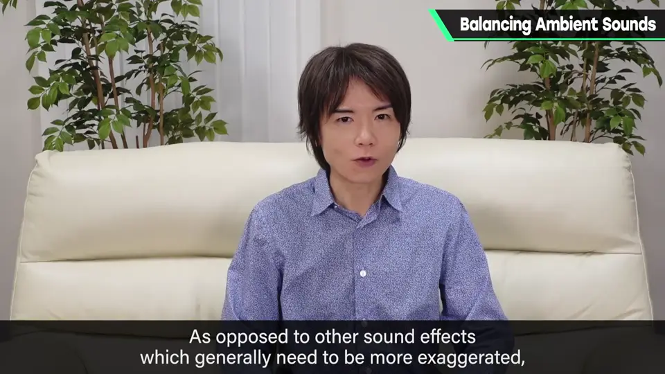
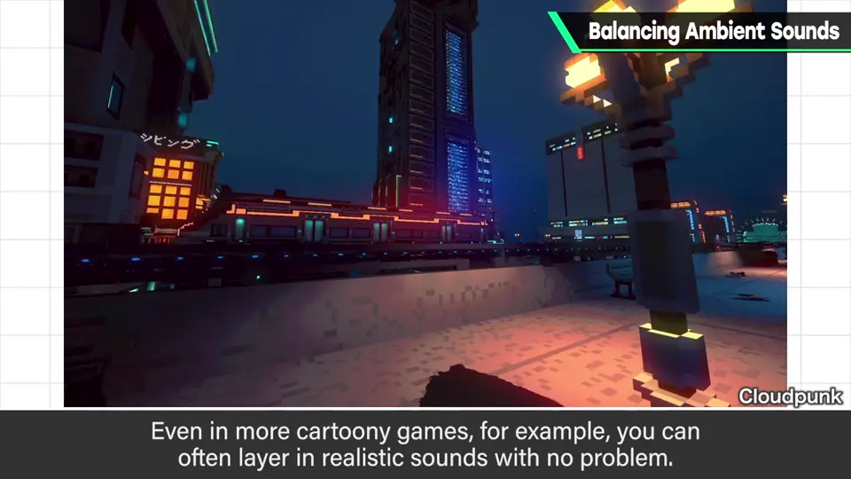
例如即使是喜剧风笔触的游戏，叠上写实的声音意外地也没问题。
这不代表简单，但影像作品等的经验也容易通用。环境音也要毫不松懈地设置，增加沉浸感。
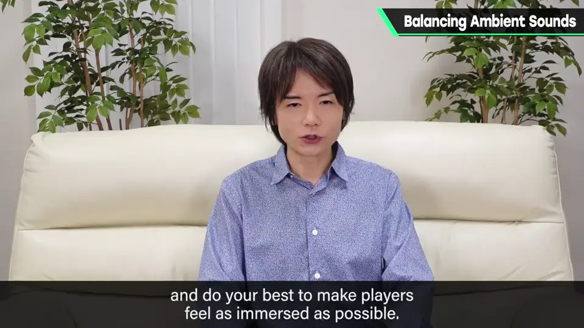
自测题
1. 环境音在优先度中处于什么位置？
最低：太响会盖住关键效果音。 0:40
2. 为什么环境音仍很重要？
好音箱环境下需要它；停手时死寂没氛围；主观/越肩视角要身临其境。 1:10
3. 环境音与一般效果音在风格上有何不同？
一般效果音需夸张，环境音可以相当写实，卡通风游戏也行。 1:25